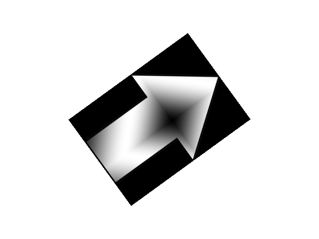

Rotation and Flipping

Last Updated: Nov 10th, 2025
Here we'll be rotating and flipping an arrow image./* Class Prototypes */
class LTexture
{
public:
//Symbolic constant
static constexpr float kOriginalSize = -1.f;
//Initializes texture variables
LTexture();
//Cleans up texture variables
~LTexture();
//Loads texture from disk
bool loadFromFile( std::string path );
//Cleans up texture
void destroy();
//Draws texture
void render( float x, float y, SDL_FRect* clip = nullptr, float width = kOriginalSize, float height = kOriginalSize, double degrees = 0.0, SDL_FPoint* center = nullptr, SDL_FlipMode flipMode = SDL_FLIP_NONE );
//Gets texture attributes
int getWidth();
int getHeight();
bool isLoaded();
private:
//Contains texture data
SDL_Texture* mTexture;
//Texture dimensions
int mWidth;
int mHeight;
};
Our rendering function will be taking in additional arguments, namely the degrees of rotation, an SDL_FPoint to represent point the image will rotate around, and an SDL_FlipMode that will define
how to flip the image.
void LTexture::render( float x, float y, SDL_FRect* clip, float width, float height, double degrees, SDL_FPoint* center, SDL_FlipMode flipMode )
{
//Set texture position
SDL_FRect dstRect{ x, y, static_cast( mWidth ), static_cast( mHeight ) };
//Default to clip dimensions if clip is given
if( clip != nullptr )
{
dstRect.w = clip->w;
dstRect.h = clip->h;
}
//Resize if new dimensions are given
if( width > 0 )
{
dstRect.w = width;
}
if( height > 0 )
{
dstRect.h = height;
}
//Render texture
SDL_RenderTextureRotated( gRenderer, mTexture, clip, &dstRect, degrees, center, flipMode );
}
Our rendering function takes in the additional arguments and passes them to SDL_RenderTextureRotated, which is like
SDL_RenderTexture only it can also rotate and flip a texture.
//The quit flag
bool quit{ false };
//The event data
SDL_Event e;
SDL_zero( e );
//Rotation degrees
double degrees = 0.0;
//Flipmode
SDL_FlipMode flipMode = SDL_FLIP_NONE;
Before we enter the main loop, we're going to declare and initialize variables to define the degrees of rotation and the current flip mode.
//On key press
else if( e.type == SDL_EVENT_KEY_DOWN )
{
switch( e.key.key )
{
//Rotate on left/right press
case SDLK_LEFT:
degrees -= 36;
break;
case SDLK_RIGHT:
degrees += 36;
break;
//Set flip mode based on 1/2/3 key press
case SDLK_1:
flipMode = SDL_FLIP_HORIZONTAL;
break;
case SDLK_2:
flipMode = SDL_FLIP_NONE;
break;
case SDLK_3:
flipMode = SDL_FLIP_VERTICAL;
break;
}
}
To make the arrow image rotate, we'll use the left/right keys. If you're wondering why adding degrees makes it rotate clockwise when you're used to having positive rotation be in the counter clockwise direction, remember that the Y axis is inverted so this also
means the rotation is inverted.
To switch between the different flip modes, we use the 1, 2, and 3 keys.
To switch between the different flip modes, we use the 1, 2, and 3 keys.
//Fill the background white
SDL_SetRenderDrawColor( gRenderer, 0xFF, 0xFF, 0xFF, 0xFF );
SDL_RenderClear( gRenderer );
//Define center from corner of image
SDL_FPoint center{ gArrowTexture.getWidth() / 2.f, gArrowTexture.getHeight() / 2.f };
//Draw texture rotated/flipped
gArrowTexture.render( ( kScreenWidth - gArrowTexture.getWidth() ) / 2.f, ( kScreenHeight - gArrowTexture.getHeight() ) / 2.f, nullptr, LTexture::kOriginalSize, LTexture::kOriginalSize, degrees, ¢er, flipMode );
//Update screen
SDL_RenderPresent( gRenderer );
Here we draw the arrow texture with our rotation and flipping variables passed in. The thing to note here is how the center point is defined. The center point is relative to the position of the image. Since the position of the image is at the top left, if we want to rotate around the center of the image
we need to pass in the point of rotation as
x = image width / 2 and y = image height / 2. If we wanted to rotate around the bottom right corner, the point of rotation would be x = image width and y = image height.
Addendum: Decoupling rendering code
As I mentioned in the previous tutorial, this method of rendering is made to be easy to read as opposed to flexible.
In real application, I would have something like this (I would probably use dedicated math vector classes instead of SDL classes though):
This can also be useful in 2D engines. However, this is going to make your code more complex. For a Nasty Tetris Project, it may make your code needlessly complex because you don't have much to draw and are probably not going to do anything the needs rendering data/algorithm decoupling. If you just need to a small game finished quickly, direct rendering is good enough.
In real application, I would have something like this (I would probably use dedicated math vector classes instead of SDL classes though):
class Transform2D
{
public:
/*Yada yada yada*/
private:
SDL_FPoint mPosition;
double mDegrees;
double mScaleX, mScaleY;
};
class SpriteDef
{
public:
/*Yada yada yada*/
private:
LTexture* mTexture;
SDL_FPoint mOrigin;
SDL_FRect* mClip;
};
class GameObject
{
public:
/*Yada yada yada*/
private:
Transform2D mTransform;
SpriteDef mSpriteDef;
};
This can also be useful in 2D engines. However, this is going to make your code more complex. For a Nasty Tetris Project, it may make your code needlessly complex because you don't have much to draw and are probably not going to do anything the needs rendering data/algorithm decoupling. If you just need to a small game finished quickly, direct rendering is good enough.